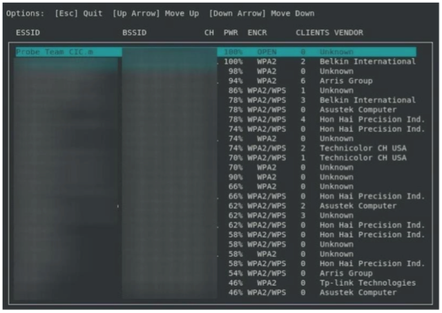
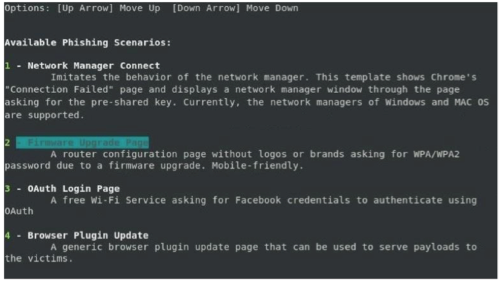
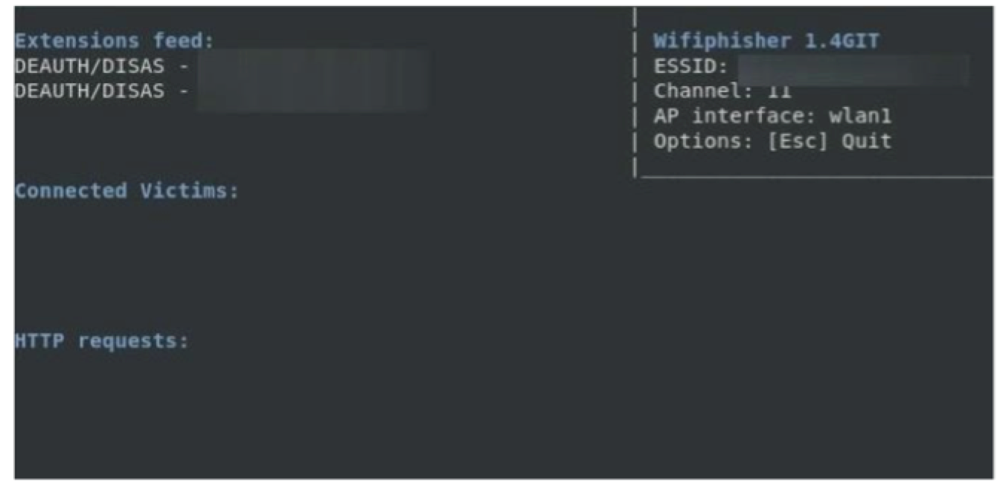
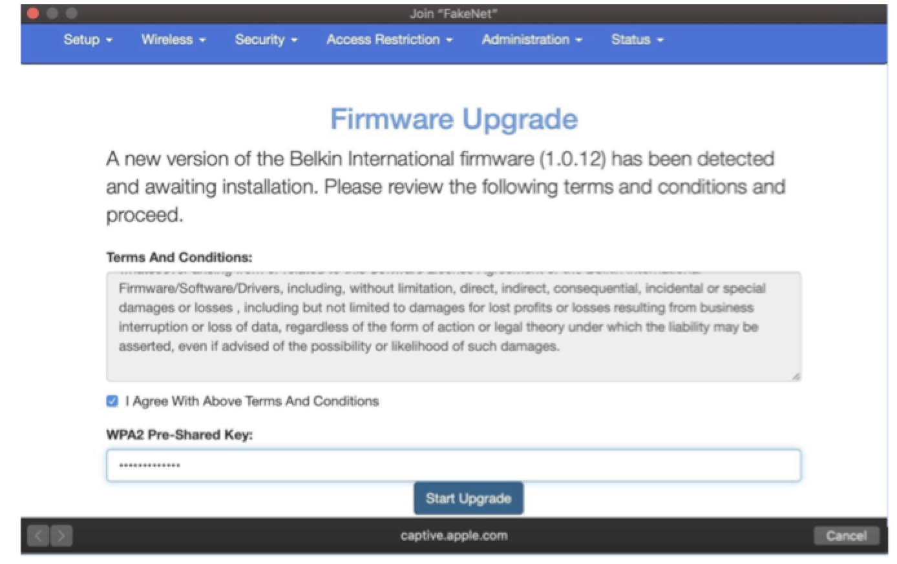
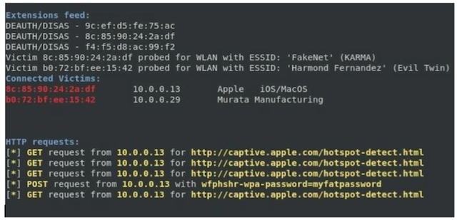
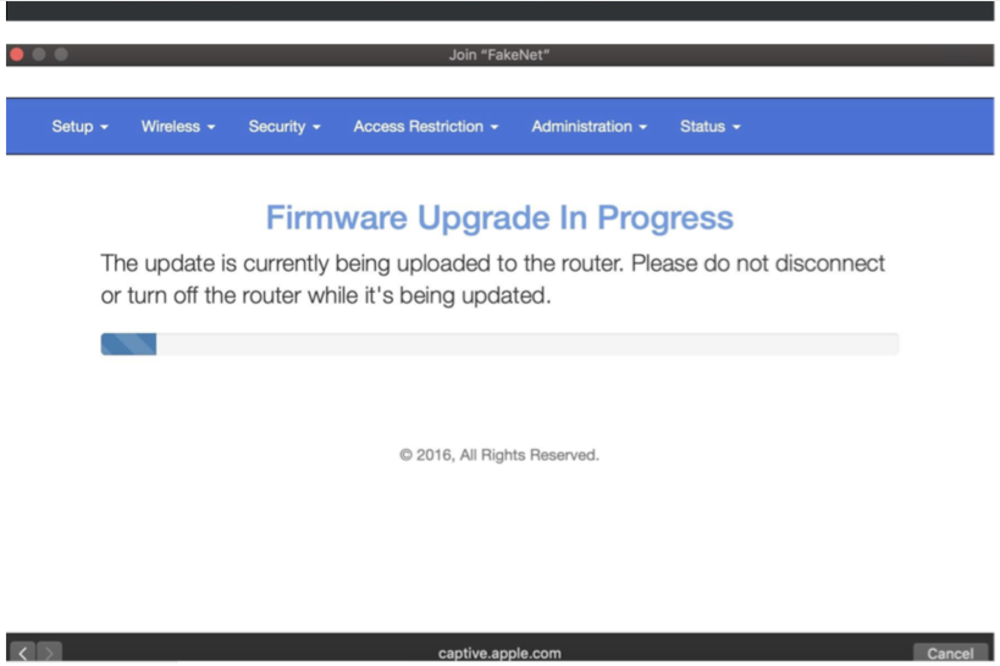

When you're unable to hack a Wi-Fi network
You should always have a basic wordlist that you'll use against the Wi-Fi network you're trying to crack. There are plenty wordlists to use in Kali but there are many more out there to be utilized (a simple Google search away). Once a wordlist has been exhausted it's time to use other resources for cracking the password. It's better to outsource password cracking to online services that can utilize way more CPU/GPU power then you'll want to invest into buying yourself. Ultimately you could setup a separate desktop dedicated to password cracking, but this isn't really necessary or needed today and that's fucking expensive.
Here is a website with many large wordlists should you choose to download and use them.
https://weakpass.com/wordlist
Online WPA/WPA2 cracking services highly recommended:
https://www.onlinehashcrack.com
https://gpuhash.me
https://hashc.co.uk
OK if you've been hacking Wi-Fi networks or just learning how to hack them you'll soon realize that you're unable to hack onto every Wi-Fi network you come across. This means you've tried attacking WEP & WPS, you've run the .cap file with the WPA/WPA2 handshake against every wordlist in your arsenal, and you've used online dedicated services for cracking WPA/WPA2 passwords, and still you're unable to crack the Wi-Fi password. There are times when you'll want and need more networks or want to gain access to a certain network so you'll need to figure out how to get this shit done.
Some people skip to using this method without trying to crack the WPA/WPA2 password because it works without going through a brute force dictionary attack and taking more time then needed. I suggest starting off with passive attacks before actively engaging your target. Think it over.
Remember, the closer you are to the target Wi-Fi network the better chance of success you'll have when launching these attacks. You want to be the best and closet transmitting signal for this attack to properly work. This is very important. So you're either in the same area as the network you're trying to hack with the better antennas OR you have a directional/parabolic aimed directly at the target area. Again, your goal is to be the strongest transmitting powered source around so people connect to you easily.
You will need (2) network cards capable of injection (Alfa network cards or similar) for this attack to work. As you've learned from watching the videos in the Wi-Fi megaprimer you're able to setup your own access point and name it whatever you'd like. If you're targeting "HOME-Wi-Fi" then you would set your rogue AP up to broadcast "HOME-Wi-Fi" as well. One network card will be used to bring up your rogue AP and the other network card will be used to launch a Denial of Service (DoS) attack against the real "HOME-Wi-Fi". The goal with the DoS attack is to overwhelm and take down the real "HOME-Wi-Fi" preventing people from connecting to it while at the same time bringing up your rogue AP tricking people into connecting to you instead. The victims will think they're connecting to their "HOME-Wi-Fi" network and not realize they are indeed connected directly to you!
When you DoS the Wi-Fi network this will bring down the real "HOME-Wi-Fi" network and will knock everyone offline who's connected to it. The people connected to the "HOME-Wi-Fi" network would eventually notice they do not have internet connection anymore and have been knocked off their Wi-Fi. Wouldn't you notice this? What do you do when you don't have a Wi-Fi connection on your home network? How would you trouble shoot it? In this type of Wi-Fi attack we're targeting the people and not anything to do with technology per se and is know as an EvilTwin attack. We're using social engineering 101 against the Wi-Fi network owners who know the password that we want.
The "average" user is capable of knowing when they do not have a Wi-Fi connection and are capable of trouble shooting a little bit to the best of their ability. They will click and search for their Wi-Fi network or at least troubleshoot a little bit. The goal with an EvilTwin attack is the only Wi-Fi network the people will be able to connect to will be your EvilTwin network which has the same name as theirs. The only difference is it will be open and unencrypted.
The reality is if they want internet they will end up connecting to your rogue access point. Maybe they don't right away but most users are not that bright, impulsive, and impatient. Most "average" users get frustrated and go through the process even if they have doubts. The average user will connect to the network and even if they take the time to call their Internet Service Provider (ISP) their ISP will tell them their internet is working fine. Which it is. Seeing that it's their router that's the problem they will advise to contact their router manufacturer or connect to the new open network that has the same name to see if that works. Almost all of the time the tech will tell them to logon to the open network to troubleshoot the connection. I've experienced this professionally when dealing with companies/employees during a wireless network assessment.
The EvilTwin attack in the old days would require so many lines of syntax setting up the AP properly, trouble shooting, and all this shit but since people have modernized these attacks and created programs to automate the process we'll use an automated tool as well. This is the most effective way to obtain the Wi-Fi password after password cracking has failed you. The tool we'll be using is called
Wifiphisher
.
"Wifiphisher is a rogue Access Point framework for conducting red team engagements or Wi-Fi security testing. Using Wifiphisher, penetration testers can easily achieve a man-in-the-middle position against wireless clients by performing targeted Wi-Fi association attacks. Wifiphisher can be further used to mount victim-customized web phishing attacks against the connected clients in order to capture credentials (e.g. from third party login pages or WPA/WPA2 Pre-Shared Keys) or infect the victim stations with malwares".
Make sure you have (2) wireless network cards (Alfa or otherwise) plugged into your Kali VM.
In Terminal in Kali:
sudo airmon-ng check kill
sudo wifiphisher
Let Wifiphisher scan the air for a couple of minutes to gain all the information possible. When you're ready select the Wi-Fi network you plan on targeting. It's best to target Wi-Fi networks with the best signal strength and that have clients connected to it to maximise all the attacks.
We target best signal strength for obvious reasons as these Wi-Fi networks are the closet to you. A good idea is to use your own laptops Wi-Fi card or iPhone/mobile device to see which have the best signal strength as these are the closet to you. The Alfa Wi-Fi cards might show a better signal strength for some networks when in fact your laptop Wi-Fi network card can't connect to them. The closer the Wi-Fi access point you're targeting is to you the better.

Once you've selected the targeted Wi-Fi network select "Firmware Upgrade Page".

Next Wifiphisher will de-authenticate everyone connected to the targeted network.

Wait 1-3 minutes before checking the Wi-Fi network you've targeted to see if your attacks are working. After a few minutes you should notice the real Wi-Fi network is offline and you've cloned the Wi-Fi network name with an open Wi-Fi network for victims to connect. This is where we rely on the people that know the Wi-Fi password of the Wi-Fi network you're targeting to connect to the open Wi-Fi of their Wi-Fi network name and enter the Wi-Fi credentials.
I suggest using this attack against your own Wi-Fi network to see exactly how your victim will be prompted with this attack.
This is what is prompted to the people when they're tricked into connecting to your EvilTwin.

Once they've entered the Wi-Fi password it will be displayed in the terminal window where Wifiphisher is running and the victims will be presented with an update screen. You'll want to take this attack down within 1-2 minutes after capturing the password if Wifiphisher doesn't automatically to avoid raising suspicion.


It's important to check your terminal screen that Wifiphisher is running in and to
PAY ATTENTION
to who connects to your rogue Wi-Fi network because you do not want to take down the target Wi-Fi network all day and have them call their ISP. You want them to connect, enter the credentials, and then you want to shut down your attack which will bring up their Wi-Fi network again. Wifiphisher is supposed to do this automatically but if it doesn't ensure you CTRL+Z it. Timing is key here not to raise suspicion but honestly this depends on whom you're targeting. Don't launch your attack in the morning and then leave it running all day/night because that will be a problem, potentially. Either way do what you think is best but understand by taking their Wi-Fi network down all day will draw unwanted attention. Maybe, maybe no.
Click to continue to Chapter 6